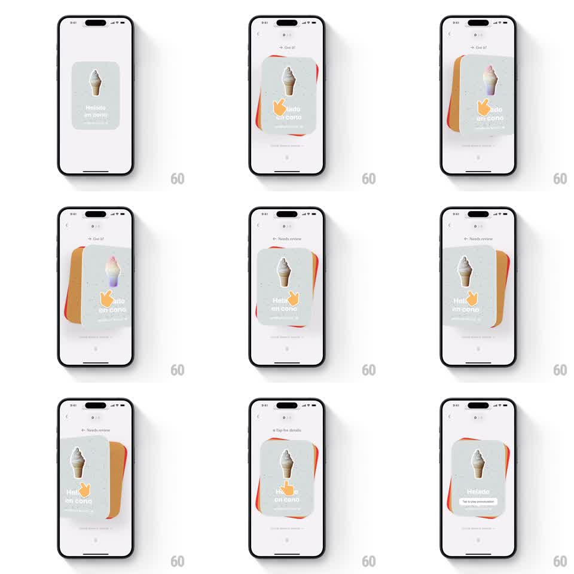

Media
Frame-by-frame

Rebuild this interaction 1:1: CapWords' gesture tutorial - an orange hand icon demonstrates the swipe on a flashcard ("Helado en cono" with an ice cream photo): it drags the card right toward "Got it!", then left toward "Needs review", with direction labels appearing at the top, then a "Tap for details" hint shows the tap gesture.

Rebuild this interaction 1:1: CapWords' gesture tutorial - an orange hand icon demonstrates the swipe on a flashcard ("Helado en cono" with an ice cream photo): it drags the card right toward "Got it!", then left toward "Needs review", with direction labels appearing at the top, then a "Tap for details" hint shows the tap gesture.
## Integration
Integration: stack-agnostic spec - springs given as stiffness/damping, timed motions as duration + curve; map every value to your framework and animation library of choice.
## Scene
Light gray practice screen. Center: a flashcard with an ice cream photo and the word "Helado en cono" with pronunciation. An orange cartoon hand overlays the card. Top center: contextual labels that swap between "Got it!" (right), "Needs review" (left), and "Tap for details". Behind the card, the next card's orange edge peeks out.
## Motion spec
Pattern: animated hand demonstrating swipe-right, swipe-left, and tap gestures.
- The hand appears on the card (fade 200ms) and presses (card scales 0.97).
- Demo 1: the hand drags the card right (translateX 120pt, rotate 10deg, 600ms ease-out); "Got it!" fades in top-center as the card tilts; the card springs back to center (spring ~300/18) and the label fades.
- Demo 2: same drag to the left (rotate -10deg) with "Needs review" at top; spring back.
- Demo 3: the hand moves to the card center and taps (two quick scale pulses 0.95 -> 1, 150ms each) as "Tap for details" appears.
- The loop repeats with a 600ms rest between cycles; the peeking next card bobs subtly behind (translateY +/-2pt).
## Calibration
- The hand leads the card slightly - the drag reads as the hand pulling it.
- Labels are tied to direction: right is always "Got it!", left always "Needs review".
## Reduced motion
A static diagram: card centered, arrows left/right with labels, tap hint below.
## Don't miss
- The hand is orange and cartoonish - a friendly pointer, not a realistic hand.
- The card rotates around its bottom edge during drags, like a card on a table.